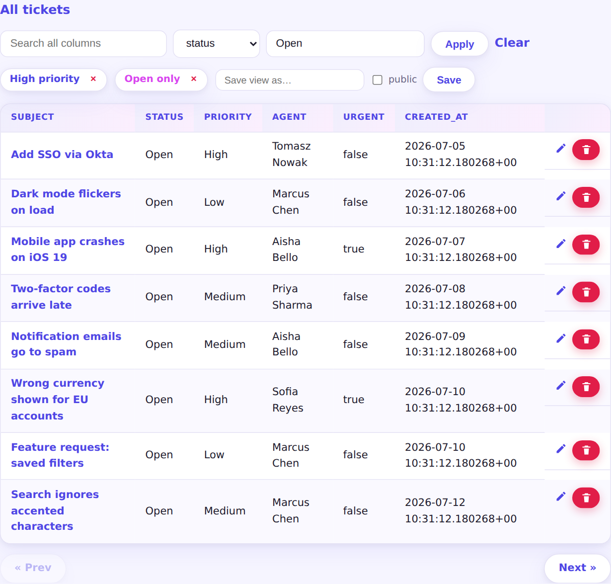

Every report grows an interactive toolbar: a search box matching across all visible columns, and a column filter ("status contains Open"). Filters live in the URL, ride along with the pagination cursors, and every value is a bind parameter — column names are validated against the report's own column list, never spliced from the request.
The current filter state saves as a named view in pgapp_meta.report_views
— private to you, or public to every user of the app. Views render as one-click chips;
owners and admins can delete them.
